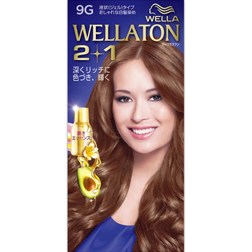
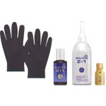

返回列表
产品名称：ウエラトーン ツープラスワン 液状 9G

Ｗｅｌｌａ ＡＧ ウエラトーン ツープラスワン 液状 9G ４３ｇ＋８６ｍｌ（医薬部外品）
メーカー Ｗｅｌｌａ ＡＧ
JANコード 4056800251346
商品の特徴
液状（ジェル）タイプ
おしゃれな白髪染め
深くリッチに色づき、輝く
成分・分量
エッセンス（ヒマワリオイル・アボカドエッセンス・ホホバオイル）：７．３ｍｌ
用法及び用量
１剤・２剤・エッセンスを混合して髪に塗布してください。